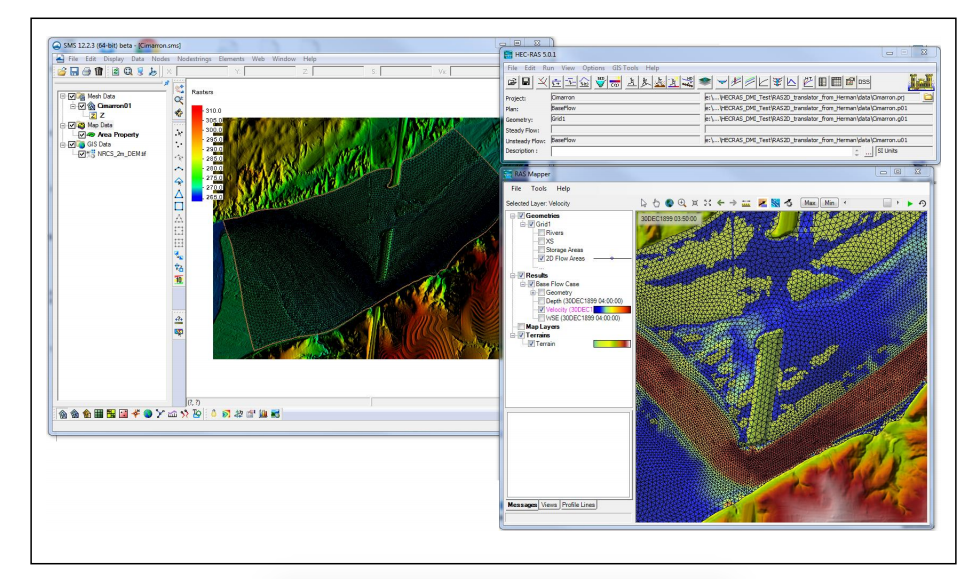

## Agenda#### A Few Words about Computing We are all computer scientists<img class="one" src="https://raw.githubusercontent.com/Dewberry-RSG/NYSFSMA-2017/master/images/detention2.png" width="600" height="600"><br>#### The Open Source Movement Free is better than Expensive<img class="two" src="https://raw.githubusercontent.com/Dewberry-RSG/NYSFSMA-2017/master/images/jupyter.png" width="200" height="200"><br>#### Rapid Analysis Potential Taking Models off the shelf<img class="two" src="https://raw.githubusercontent.com/Dewberry-RSG/NYSFSMA-2017/master/images/forecast.png" width="500" height="500"><br># Part 1: Computing ### We are all computer scientists:<img class="one" src="https://raw.githubusercontent.com/Dewberry-RSG/NYSFSMA-2017/master/images/excel.png" width="300" height="300"><br>### It's time to free ourselves the GUI:for AllMyData: if b < c: d = c else: d = b### Compelling Reasons to make the jump 1. Data sets are much, much bigger a. 2D Modelling i. Grids and Meshes ii. Nodal Attributes, Global outputs iii. Global Outputs iv. Time Series, Spatial files <img class="one" src="https://raw.githubusercontent.com/Dewberry-RSG/NYSFSMA-2017/master/images/sms_rasgrid.png" width="700" height="700"><br> b. Geospatial Data i. Scale - State, Region, Nation ii. Structures, Meterology 1. Data sets are much, much bigger
a. 2D Modelling
i. Grids and Meshes
ii. Nodal Attributes, Global outputs
iii. Global Outputs
iv. Time Series, Spatial files

b. Geospatial Data
i. Scale - State, Region, Nation
ii. Structures, Meterology
2. Data is not homogenous a. Gridded Datasets netcdf, xmrg, grib <img class="one" src="https://raw.githubusercontent.com/Dewberry-RSG/NYSFSMA-2017/master/images/qpf.jpg" width="600" height="600"><br> b. Scientific Datasets hdf5, PostgreSQL<img class="one" src="https://raw.githubusercontent.com/Dewberry-RSG/NYSFSMA-2017/master/images/postgresql.png" width="400" height="400"><br> 2. Data is not homogenous
a. Gridded Datasets
netcdf, xmrg, grib

b. Scientific Datasets
hdf5, PostgreSQL

3. Data access is available through API's NOAA, USGS, google, twitter... <img class="one" src="https://raw.githubusercontent.com/Dewberry-RSG/NYSFSMA-2017/master/images/usgs_api.png" width="600" height="600"><br> 4. Scripting is easier than ever: Python, R, and others are very advanced & widely used Interfaces are much better now3. Data access is available through API's
NOAA, USGS, google, twitter...

4. Scripting is easier than ever:
Python, R, and others are very advanced & widely used
Interfaces are much better now
# Part 2: The Open Source Revolution <img class="one" src="https://raw.githubusercontent.com/Dewberry-RSG/NYSFSMA-2017/master/images/github.png" width="500" height="500"><br>#### [USGS](https://github.com/usgs)#### [NOAA](https://github.com/NOAA-ORR-ERD)#### [ERDC](https://github.com/erdc-cm)#### [NYSFMSA](https://github.com/Dewberry-RSG/NYSFSMA-2017)### HEC-Center: Made the leapNo longer supporting ESRI arc-hydro tools<img class="one" src="https://raw.githubusercontent.com/Dewberry-RSG/NYSFSMA-2017/master/images/gdal.png" width="300" height="300"><br>No longer supporting ESRI arc-hydro tools

# Part 3: Re-analysis and modeling of levee systems### Updating exisiting models: Hydrology 1. Data Retrieval 2. Data Analysis 3. Data Manipulation 4. Data Export ### Keeping models off the shelf 1. Forecasting potential 2. Post event analysis ### Jupyter Notebooks[Levee Hydrology: Python](python/GageExplorer_Vestal.ipynb)[Characteristic Levee Crest: Julia](julia/FreeboardContinuityChecker.ipynb)[USGS Data Retrieval: R](r/USGS_DataGrabber.ipynb)[Lake Champlain Level Checker: Python](python/LakeChamplain_Daily.ipynb)[Lake Champlain Seiching: Python](python/LakeChamplain_2009_seiche.ipynb)